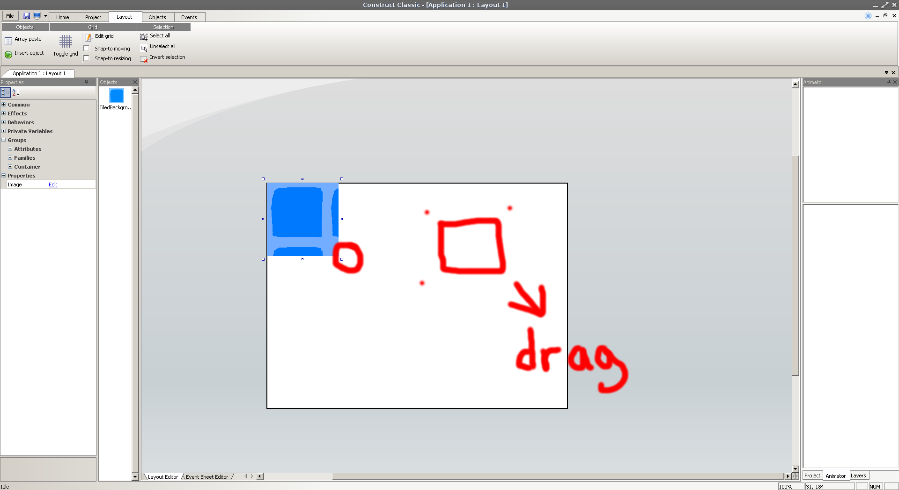

Today we are going to use "Construct Classic" to make our video game, you can download it here. Construct Classic is a cool tool that lets you make a wide variety of video games.
After downloading the file, run the installer. If you need any help during installation let one of the mentors know.
Now that Construct is installed lets make a game. Start-up Construct on your computer. First click on "File" in the top left corner of the program, then click "New" and click into "New Direct-X game" ,or you can hit CTRL + N on your keyboard. This creates a new blank game for us to build upon, but lets talk about video game mechanics.
We are going to be making a '2-dimensional' Video game. These games have a few components we need to be aware of;
So before we can make the game, we need at least these three things; a Background, a Player, and some Enemies. These objects are called "Sprites" ,they can be made with any drawing program, like paint. We are going to be making our "Sprites" in the Construct program, but you can draw your's in paint too.
Lets start with the background, this is the level that is underneath a players' feet. The player and the enemies move over it, it needs to have a simple style, if the style of the background is too complicated then the player will feel distracted (and may even get sick!). First right-click into the white space in the middle of the screen, then select "Insert an object".
A new window will pop up called "Construct : Insert new object". This window contains everything you can insert into a project, don't worry we are not going to cover all this junk today. We just want to insert a background for now, within this window find "Tiled Background" then click "Insert" at the top-right of the window.

The window will close, and you will be back to the main window. Your cursor will change to a big plus mark "+" click anywhere in the white space to insert the background.
This new window is the sprite editor, here is where we are going to make our tiled background. You can begin drawing with the tools at the left, I am using the brush tool. Remember - don't choose colors that are too crazy, or you might get sick! I recommend choosing a light blue.

The reason we don't color a solid block of color is because this is a Tiled Background, if it was all one color then the player would not be able to tell where they were going, so put a lining around the block near the edges.

When your sprite is done, hit "Save" at the top left corner. Save this file somewhere on your computer, I recommend saving it to the Desktop folder.
Now that it is saved somewhere safe, close out of the editing window (If it asks you to save again, hit "OK"). You should see one tile in the middle of the screen, make the tile fill the screen by dragging the squares in the corners of the tile.

Your background should look something like this, we are almost done adding it, and are almost ready to start adding a player and enemies. (Ask a mentor if you need any help) -----------------------